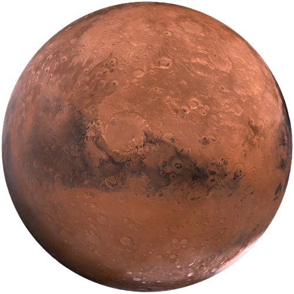

- Marte é o quarto planeta a partir do Sol em nosso sistema solar.
- É frequentemente chamado de "Planeta Vermelho" devido à sua cor característica, que é resultado da presença de óxido de ferro em sua superfície.
- Marte tem cerca de metade do tamanho da Terra e uma atmosfera muito fina, composta principalmente de dióxido de carbono.
- A superfície de Marte é marcada por características geológicas intrigantes, incluindo vulcões, cânions profundos e a famosa Valles Marineris, um sistema de cânions que se estende por milhares de quilômetros.
- Marte tem a maior montanha conhecida em nosso sistema solar, o Monte Olimpo, que é aproximadamente três vezes mais alto que o Monte Everest da Terra.
- Há evidências de que Marte já teve água líquida em sua superfície no passado, sugerindo a possibilidade de vida ou condições favoráveis para a vida no passado.
- Diversas missões espaciais foram enviadas para estudar Marte, incluindo os robôs exploradores da NASA, como o Spirit, Opportunity, Curiosity e o rover Perseverance.
- Marte tem duas pequenas luas chamadas Fobos e Deimos, que são muito menores do que as luas da Terra.
- Os seres humanos têm planos futuros de enviar missões tripuladas a Marte, com o objetivo de explorar o planeta e buscar evidências de vida passada ou presente.
- Marte é um dos destinos mais estudados para futura colonização humana no espaço.
|

|